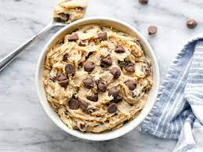

Edible Cookie Dough

Description
There is a potential risk of foodborne illness from the consumption of raw flour. Follow step 1 to heat-treat your flour so it is safe to use. If you do not have a microwave, spread flour out on a baking sheet and toast in an oven at 350 degrees F for 5 to 6 minutes.
Ingredients
- 1 cup all purpose flour
- 3/4 cup packed brown sugar
- 1/2 cup butter
- 1 teaspoon vanilla extract
- 1/2 teaspoon salt
- 2 tablespoons milk
- 1/2 cup milk chocolate chips
- 1/2 cup mini chocolate chips
Steps
- Heat-treat your flour so it is safe to use. Place flour in a microwave safe dish and cook for 1 minute and 15 seconds, stirring it every 15 seconds. Set aside.
- Beat sugar and butter with an electric mixer in a large bowl until creamy. Beat in vanilla extract and salt. Add heat-treated flour and mix until crumbly dough forms. Stir in milk until dough is just combined. Fold in milk chocolate and mini chocolate chips.